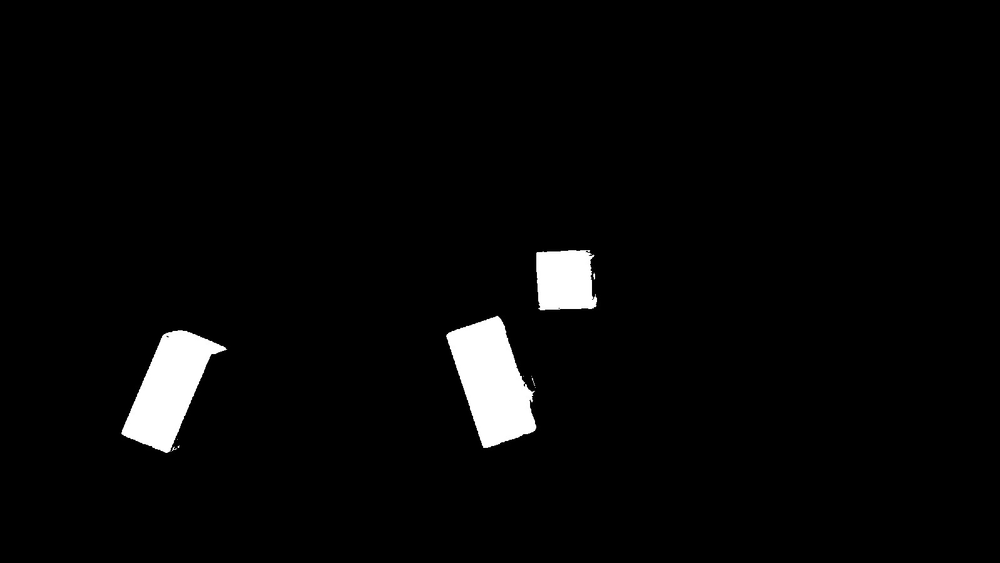
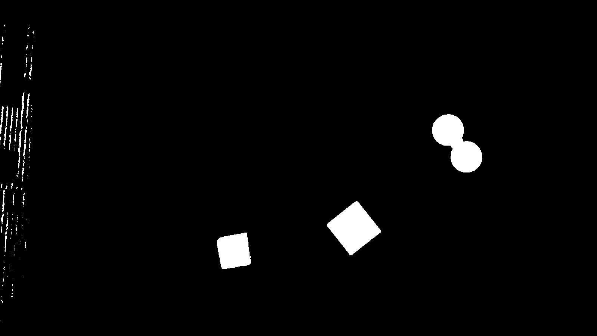
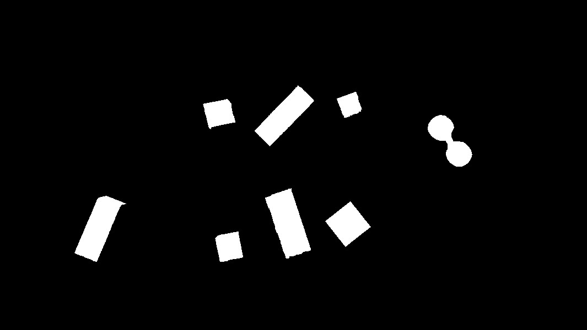
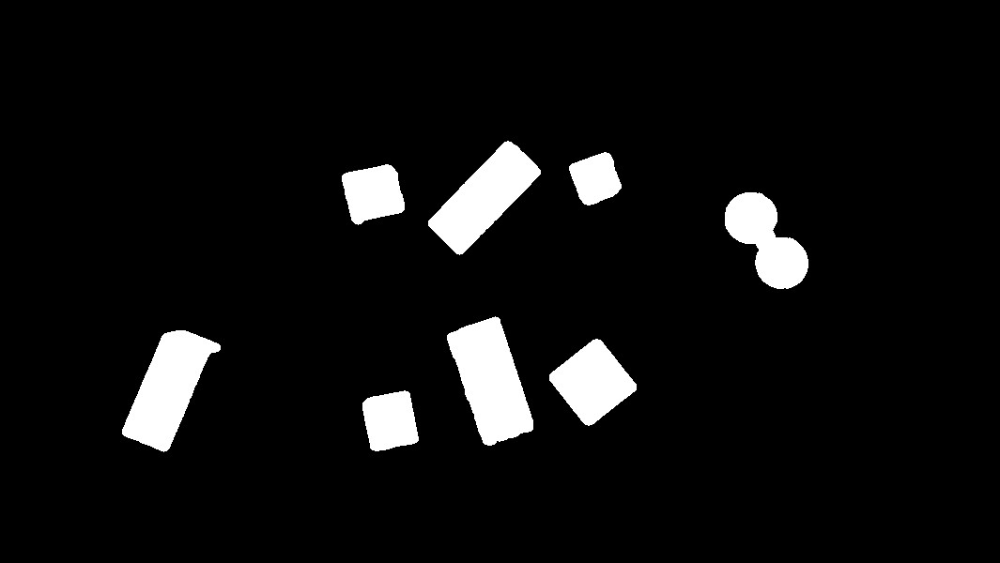
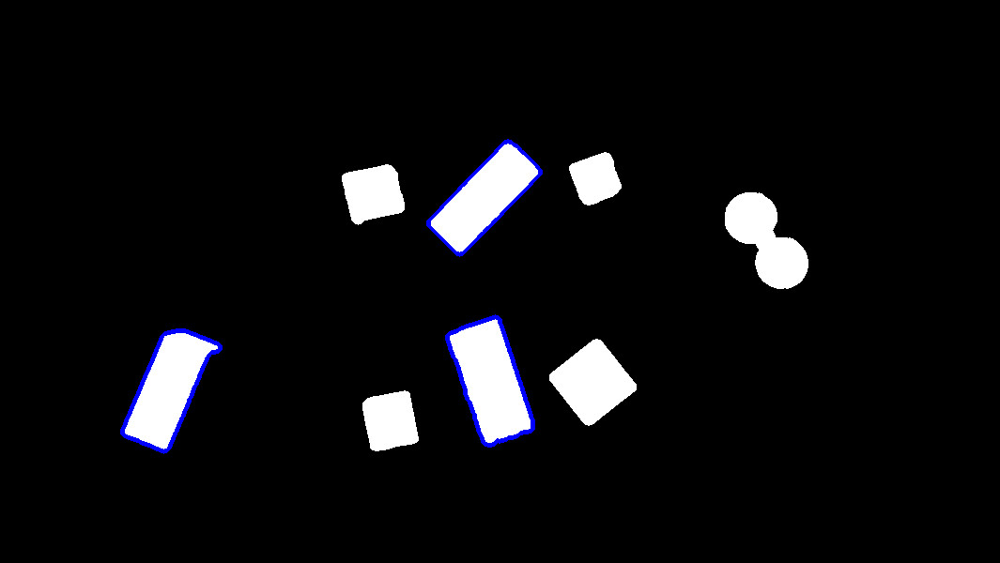
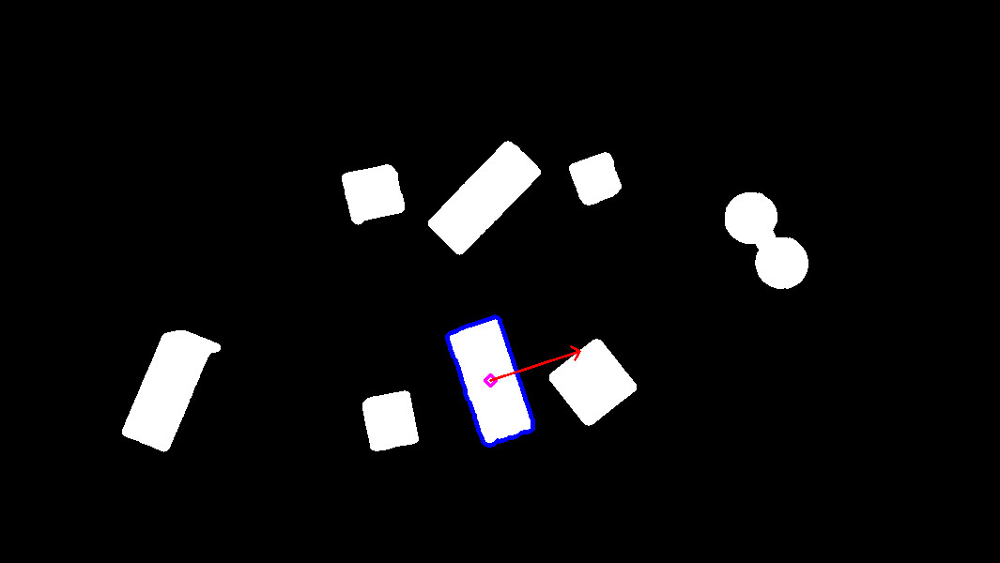
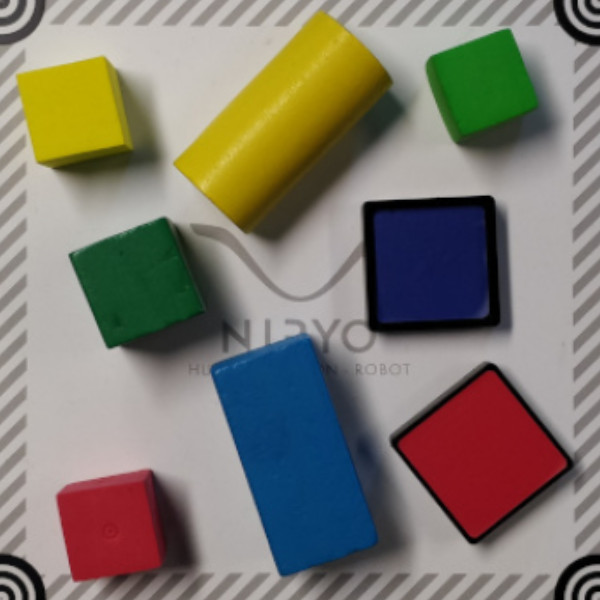
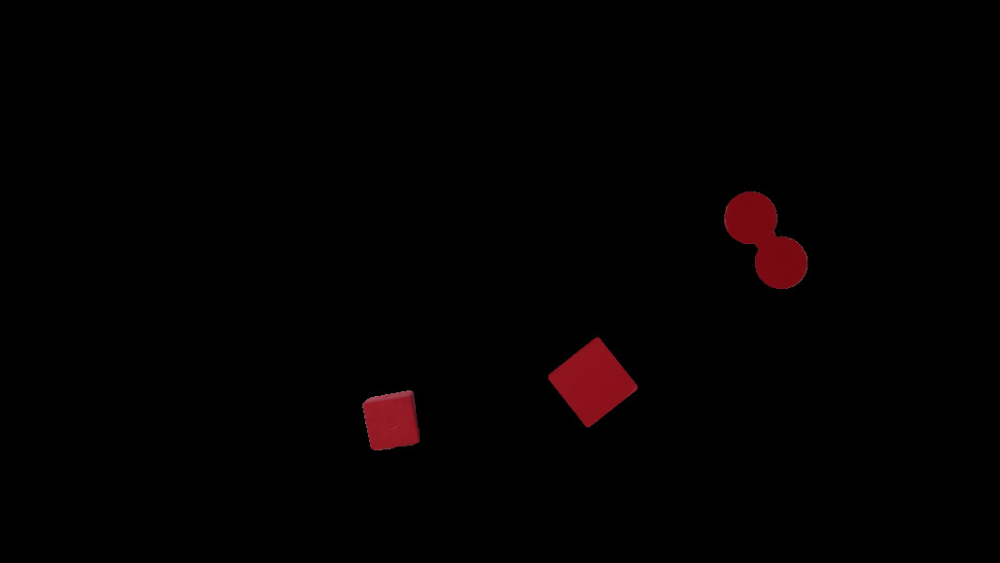
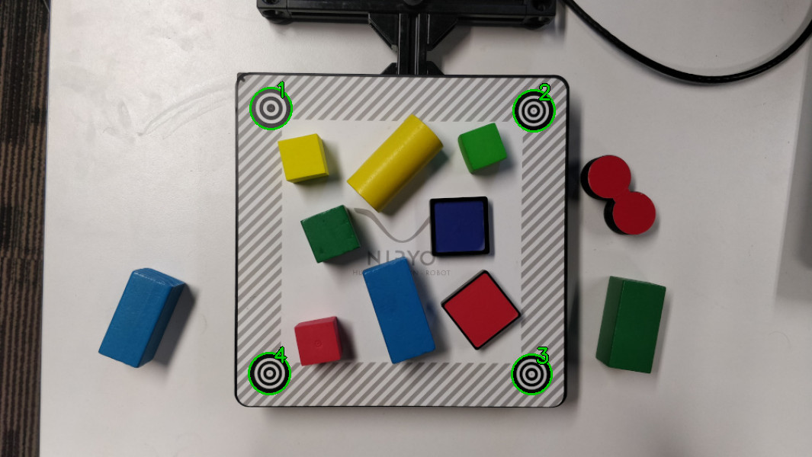

Overview & examples
This file illustrates few image processing pipeline using vision module from niryo_edu package. This module is based in OpenCV and its functions are detailed in Functions documentation.
from pyniryo.vision import *.Note
It is also possible to merge both import lines by using from pyniryo import *.
Play with Robot video stream
We are firstly going to take a look at robot’s functions which can be find at API - Vision
Get & display image from stream
Ned can share its video stream through TCP. As sending raw images will
lead to heavy packets which can saturate the network, it sends compressed images.
You access it through the robot’s function:
get_img_compressed().
Once your image is received, you firstly need to uncompress via
uncompress_image() and you can then display
it with show_img_and_wait_close().
from pyniryo import *
# Connecting to robot
robot = NiryoRobot("10.10.10.10")
# Getting image
img_compressed = robot.get_img_compressed()
# Uncompressing image
img = uncompress_image(img_compressed)
# Displaying
show_img_and_wait_close("img_stream", img)
Note
show_img_and_wait_close() will wait for the user
to press either Q or Esc key, before closing the window.
Undistort and display video stream
In this section, we are going to display the raw video stream & the undistorted video stream.
As Ned’s camera is passing raw images to the robot, these images are distorted due to the camera lens. In order to undistort them, we need to use Ned’s camera intrinsics.
To undistort the raw image, we use undistort_image()
which need to be called with the parameters given by Ned through
get_camera_intrinsics().
Once, we have both raw & undistorted images, we can concatenate them in order
to display them in once with concat_imgs().
Finally, we display the image show_img().
from pyniryo import *
observation_pose = PoseObject(
x=0.18, y=0.0, z=0.35,
roll=0.0, pitch=1.57, yaw=-0.2,
)
# Connecting to robot
robot = NiryoRobot("10.10.10.10")
robot.calibrate_auto()
# Getting calibration param
mtx, dist = robot.get_camera_intrinsics()
# Moving to observation pose
robot.move_pose(observation_pose)
while "User do not press Escape neither Q":
# Getting image
img_compressed = robot.get_img_compressed()
# Uncompressing image
img_raw = uncompress_image(img_compressed)
# Undistorting
img_undistort = undistort_image(img_raw, mtx, dist)
# - Display
# Concatenating raw image and undistorted image
concat_ims = concat_imgs((img_raw, img_undistort))
# Showing images
key = show_img("Images raw & undistorted", concat_ims, wait_ms=30)
if key in [27, ord("q")]: # Will break loop if the user press Escape or Q
break
Note
To see more about camera distortion/undistortion, go on OpenCV Documentation about Camera Calibration.
Pure image processing functions
Hint
See the curriculum on image processing for more theoretical information.
In order to illustrate functions, we are going to use the following image.
{kind=link}
Attention
In this section it is supposed that:
You have imported
pyniryo.visionThe variable
imgis containing the image on which image processing is applied
Color thresholding
Color thresholding is very useful in order to detect object with an uniform color.
The implemented function to realize this operation is
threshold_hsv().
The following code is using parameters from ColorHSV enum
in order to threshold Red features & hand made parameters to extract Blue:
img_threshold_red = threshold_hsv(img_test, *ColorHSV.RED.value)
blue_min_hsv = [90, 85, 70]
blue_max_hsv = [125, 255, 255]
img_threshold_blue = threshold_hsv(img_test, list_min_hsv=blue_min_hsv,
list_max_hsv=blue_max_hsv, reverse_hue=False)
show_img("img_threshold_red", img_threshold_red)
show_img_and_wait_close("img_threshold_blue", img_threshold_blue)
Thresh color |
Image result |
|---|---|
Blue |
 |
Red |
 |
Morphological transformations
Morphological transformations are some simple operations based on the image shape. It is normally performed on binary images. It needs two inputs, one is our original image, second one is called structuring element or kernel which decides the nature of operation. Two basic morphological operators are Erosion and Dilation.
Then its variant forms like Opening, Closing also comes into play. Learn more on Wikipedia page.
The implemented function to realize these operations is
morphological_transformations().
It uses MorphoType and KernelType
to determine which operation should be applied on the image.
The code shows how to do a Closing & an Erosion:
img_threshold = threshold_hsv(img_test, *ColorHSV.ANY.value)
img_close = morphological_transformations(img_threshold, morpho_type=MorphoType.CLOSE,
kernel_shape=(11, 11), kernel_type=KernelType.ELLIPSE)
img_erode = morphological_transformations(img_threshold, morpho_type=MorphoType.ERODE,
kernel_shape=(9, 9), kernel_type=KernelType.RECT)
show_img("img_threshold", img_threshold)
show_img("img_erode", img_erode)
show_img_and_wait_close("img_close", img_close)
Morpho type |
Image result |
|---|---|
None |
|
Erode |
 |
Close |
Contours finder
Contours can be explained simply as a curve joining all the continuous points (along the boundary), having same color or intensity. The contours are a useful tool for shape analysis and object detection and recognition. See more on OpenCV Documentation.
The implemented function to realize these operations is
biggest_contours_finder() which takes a
Black & White image, and extract the biggest (in term of area) contours from it.
The code to extract and draw the 3 biggest contours from an image is the following:
img_threshold = threshold_hsv(img_test, *ColorHSV.ANY.value)
img_threshold = morphological_transformations(img_threshold, morpho_type=MorphoType.OPEN,
kernel_shape=(11, 11), kernel_type=KernelType.ELLIPSE)
cnts = biggest_contours_finder(img_threshold, 3)
img_contours = draw_contours(img_threshold, cnts)
show_img("init", img_threshold)
show_img_and_wait_close("img with contours", img_contours)
Thresh + Opening |
 |
3 contours |
 |
Find object center position
In order to catch an object, we need to find a pose from where the
end effector can grasp the object. The following method
uses contours which have been found in the previous section and finds their
barycenter and orientation via the functions
get_contour_barycenter() &
get_contour_angle().
img_threshold = threshold_hsv(img_test, *ColorHSV.ANY.value)
img_threshold = morphological_transformations(img_threshold, morpho_type=MorphoType.OPEN,
kernel_shape=(11, 11), kernel_type=KernelType.ELLIPSE)
cnt = biggest_contour_finder(img_threshold)
cnt_barycenter = get_contour_barycenter(cnt)
cnt_angle = get_contour_angle(cnt)
Thresh + Opening |
|
Barycenter + Angle |
 |
Note
The drawn vector is normal to the contour’s length because we want Ned to catch the object by the width rather than the length. Indeed, it leads to least cases where the gripper cannot open enough.
Markers extraction
As image processing happens in a workspace, it is important to extract
the workspace beforehand! To do so, you can use the function
extract_img_workspace().
status, im_work = extract_img_workspace(img, workspace_ratio=1.0)
show_img("init", img_test)
show_img_and_wait_close("img_workspace", img_workspace)
Original |
|
Extracted |
 |
{kind=link}
Debug mode
If Ned’s functions are failing, you can use Debug functions which are
debug_threshold_color() &
debug_markers() in order to display what
the robot sees.
You can use the functions as follow:
debug_color = debug_threshold_color(img_test, ColorHSV.RED)
_status, debug_markers_im = debug_markers(img_test, workspace_ratio=1.0)
show_img("init", img_test)
show_img("debug_color", debug_color)
show_img_and_wait_close("debug_markers", debug_markers_im)
Original |
|
Debug red |
 |
Debug Markers |
 |
{kind=link}
{kind=link}
Do your own image processing!
Now that you are a master in image processing, let’s look at full examples.
Display video stream with extracted workspace
In the current state, the following code will display the video stream and the extracted workspace image. You can add your own image processing functions maybe to apply additional process.
from pyniryo import *
# Connecting to robot
robot = NiryoRobot("10.10.10.10")
robot.calibrate_auto()
# Getting calibration param
mtx, dist = robot.get_camera_intrinsics()
# Moving to observation pose
robot.move_pose(*observation_pose.to_list())
while "User do not press Escape neither Q":
# Getting image
img_compressed = robot.get_img_compressed()
# Uncompressing image
img_raw = uncompress_image(img_compressed)
# Undistorting
img_undistort = undistort_image(img_raw, mtx, dist)
# Trying to find markers
workspace_found, res_img_markers = debug_markers(img_undistort)
# Trying to extract workspace if possible
if workspace_found:
img_workspace = extract_img_workspace(img_undistort, workspace_ratio=1.0)
else:
img_workspace = None
# --- --------- --- #
# --- YOUR CODE --- #
# --- --------- --- #
# - Display
# Concatenating raw image and undistorted image
concat_ims = concat_imgs((img_raw, img_undistort))
# Concatenating extracted workspace with markers annotation
if img_workspace is not None:
resized_img_workspace = resize_img(img_workspace, height=res_img_markers.shape[0])
res_img_markers = concat_imgs((res_img_markers, resized_img_workspace))
# Showing images
show_img("Images raw & undistorted", concat_ims)
key = show_img("Markers", res_img_markers, wait_ms=30)
if key in [27, ord("q")]: # Will break loop if the user press Escape or Q
break
Vision pick via your image processing pipeline
You may want to send coordinate to Ned in order to pick
the object of your choice! To do that, use the function
get_target_pose_from_rel() which
converts a relative pose in the workspace into a pose in the robot’s world!
# Initializing variables
obj_pose = None
try_without_success = 0
count = 0
color_hsv_setting = ColorHSV.ANY.value
mtx, dist = robot.get_camera_intrinsics()
# Loop
while try_without_success < 5:
# Moving to observation pose
robot.move_pose(observation_pose)
img_compressed = robot.get_img_compressed()
img = uncompress_image(img_compressed)
img = undistort_image(img, mtx, dist)
# extracting working area
im_work = extract_img_workspace(img, workspace_ratio=1.0)
if im_work is None:
print("Unable to find markers")
try_without_success += 1
if display_stream:
cv2.imshow("Last image saw", img)
cv2.waitKey(25)
continue
# Applying Threshold on ObjectColor
img_thresh = threshold_hsv(im_work, *color_hsv_setting)
if display_stream:
show_img("Last image saw", img, wait_ms=0)
show_img("Image thresh", img_thresh, wait_ms=30)
# Getting biggest contour/blob from threshold image
contour = biggest_contour_finder(img_thresh)
if contour is None or len(contour) == 0:
print("No blob found")
obj_found = False
else:
img_thresh_rgb = cv2.cvtColor(img_thresh, cv2.COLOR_GRAY2BGR)
draw_contours(img_thresh_rgb, [contour])
show_img("Image thresh", img_thresh, wait_ms=30)
# Getting contour/blob center and angle
cx, cy = get_contour_barycenter(contour)
cx_rel, cy_rel = relative_pos_from_pixels(im_work, cx, cy)
angle = get_contour_angle(contour)
# Getting object world pose from relative pose
obj_pose = robot.get_target_pose_from_rel(workspace_name,
height_offset=0.0,
x_rel=cx_rel, y_rel=cy_rel,
yaw_rel=angle)
obj_found = True
if not obj_found:
try_without_success += 1
continue
# Everything is good, so we going to object
robot.pick_from_pose(obj_pose)
# Computing new place pose
offset_x = count % grid_dimension[0] - grid_dimension[0] // 2
offset_y = (count // grid_dimension[1]) % 3 - grid_dimension[1] // 2
offset_z = count // (grid_dimension[0] * grid_dimension[1])
place_pose = center_conditioning_pose.copy_with_offsets(0.05 * offset_x, 0.05 * offset_y, 0.025 * offset_z)
# Placing
robot.place_from_pose(place_pose)
try_without_success = 0
count += 1